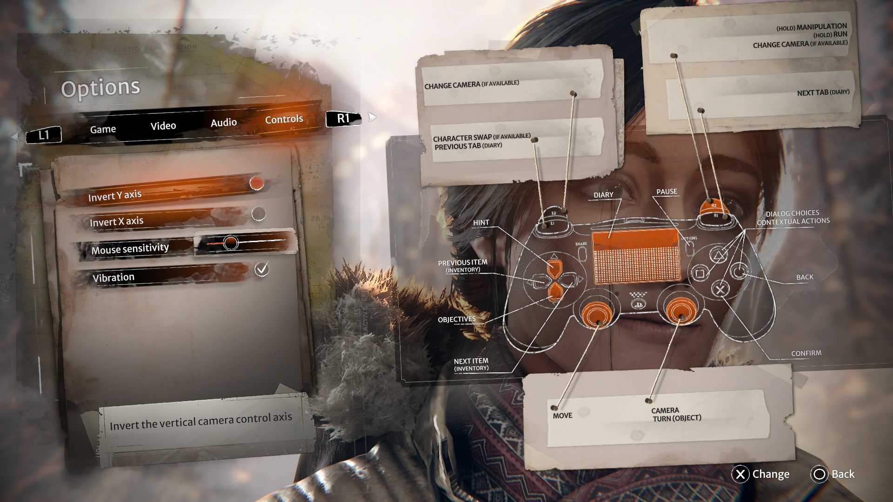
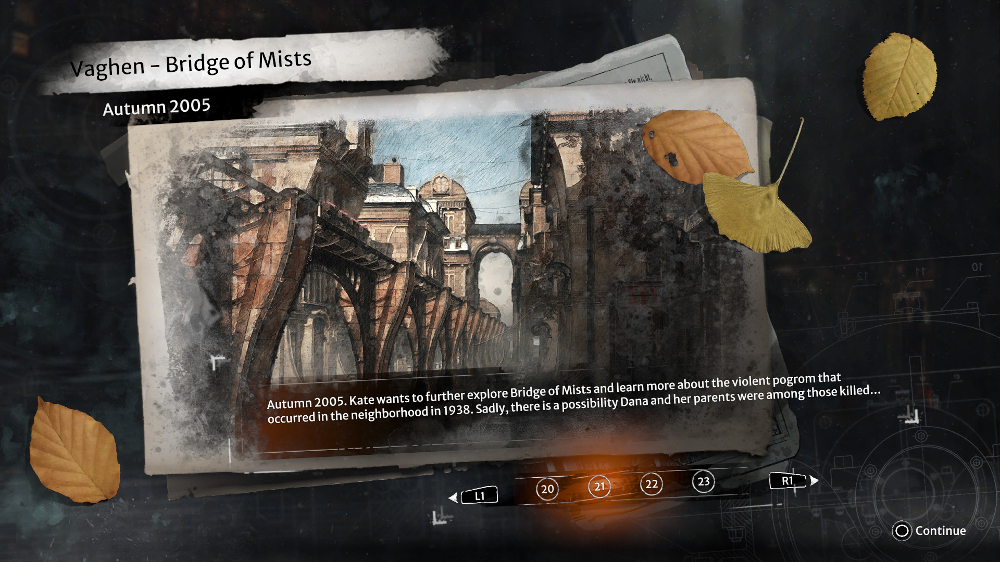
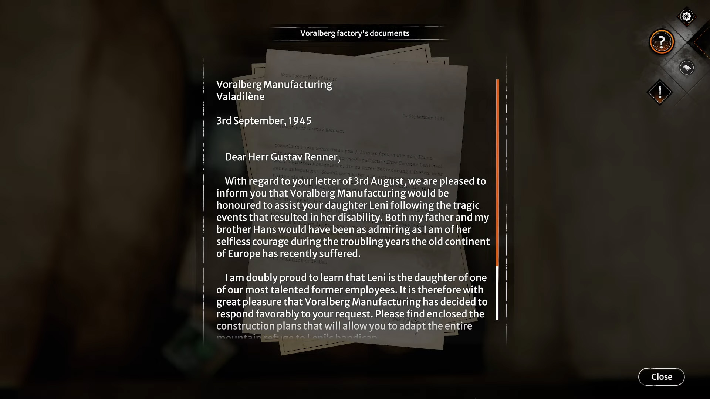
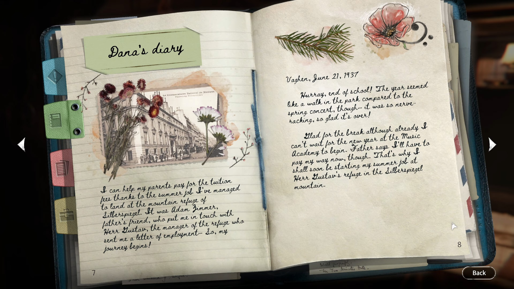
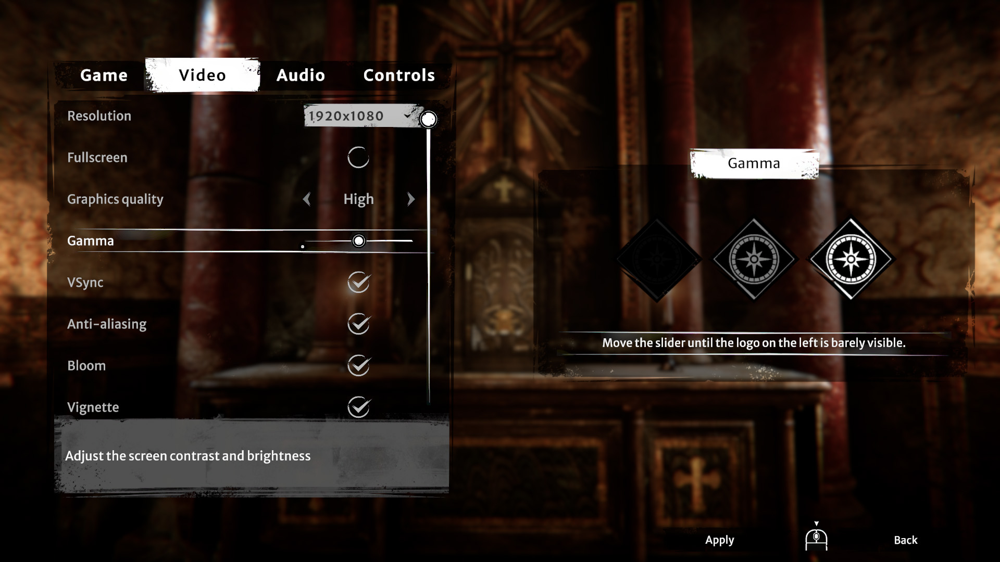
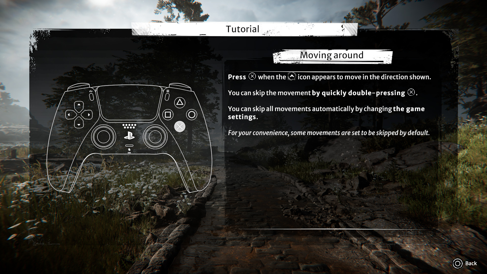
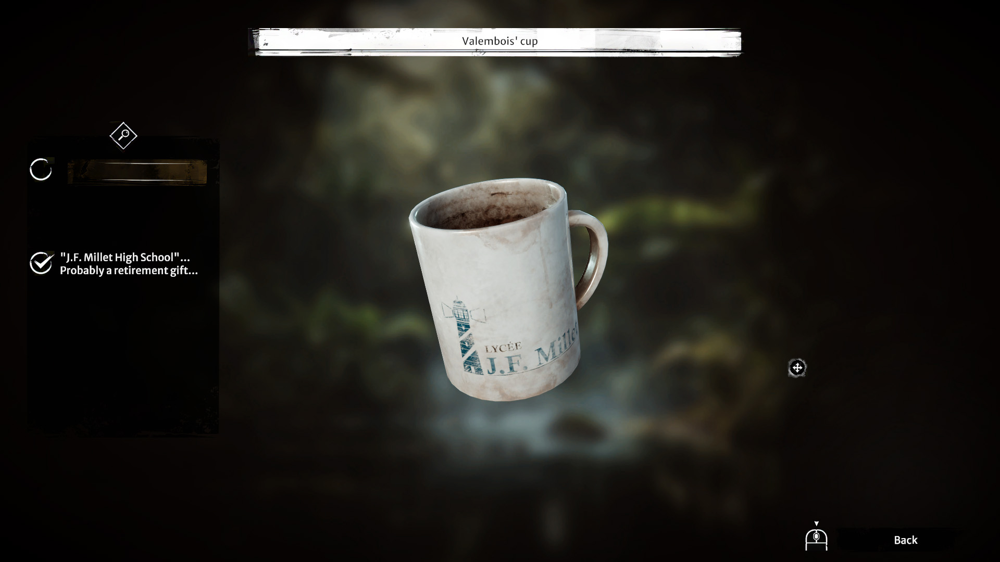
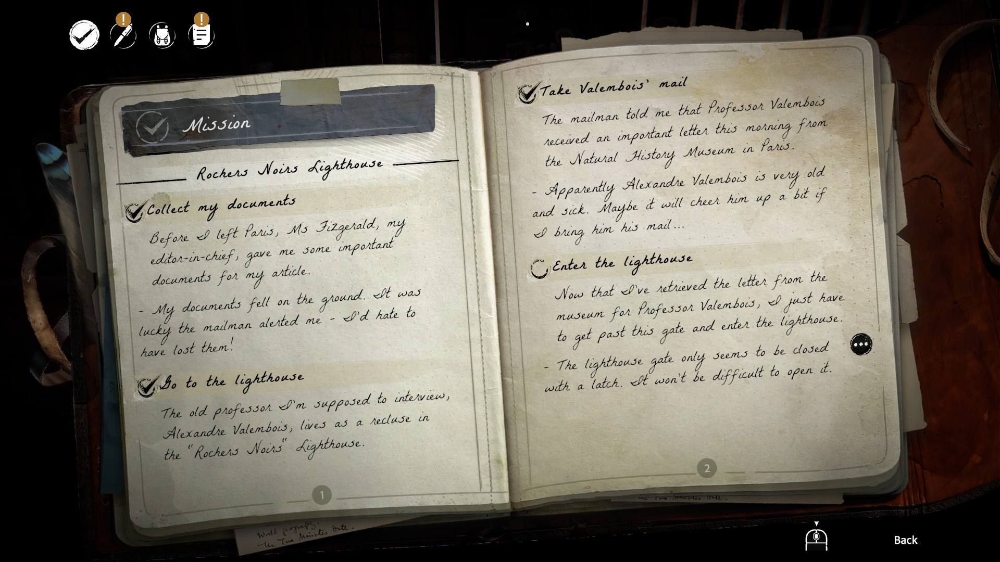
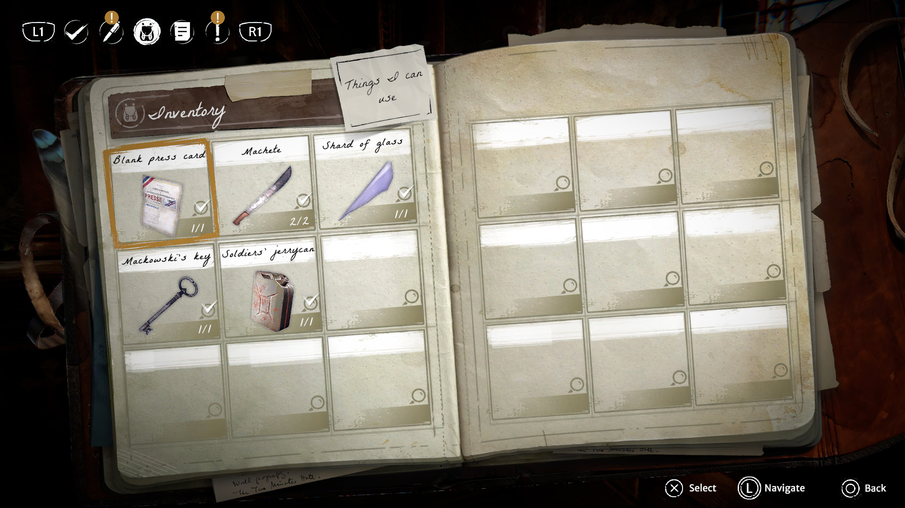
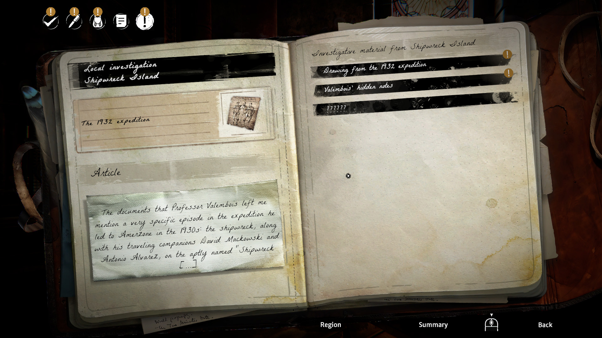

Main menu with options:

Loading screen with evolving story recap:

A focused document with text overlay:

A main character's diary with dynamic page layout:

A scripted animation I designed and coded:
Options menu:

Full screen tutorial:

Object interaction screen with discoverable secrets:

The explorer's journal, opened at the objective&hints page (with dynamic layout):

The journal also serves as an inventory:

The journal, opened at an ongoing sidequest's page:

Tooltip for clickable objects:
Two animations I designed and coded for the radial menu used throughout the game: